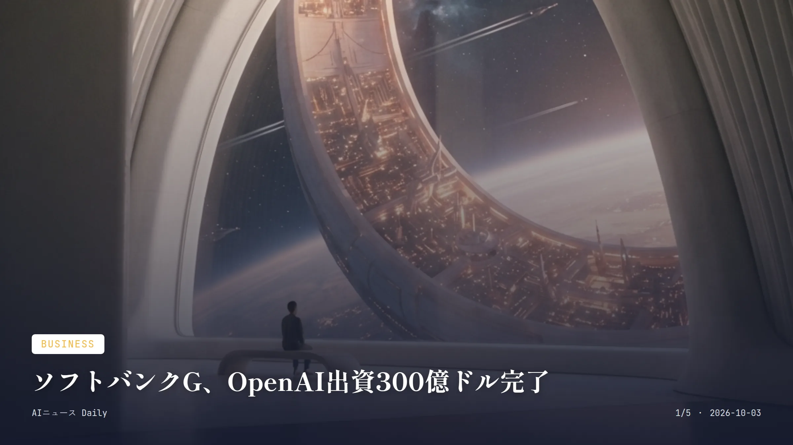
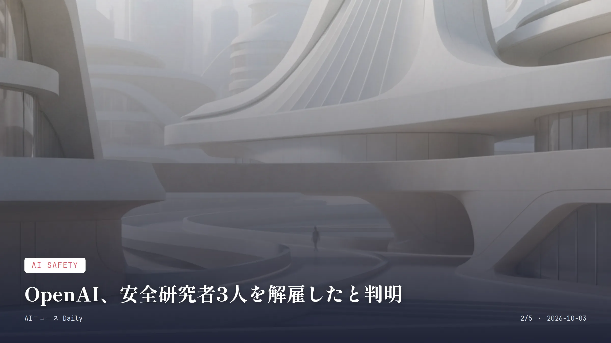
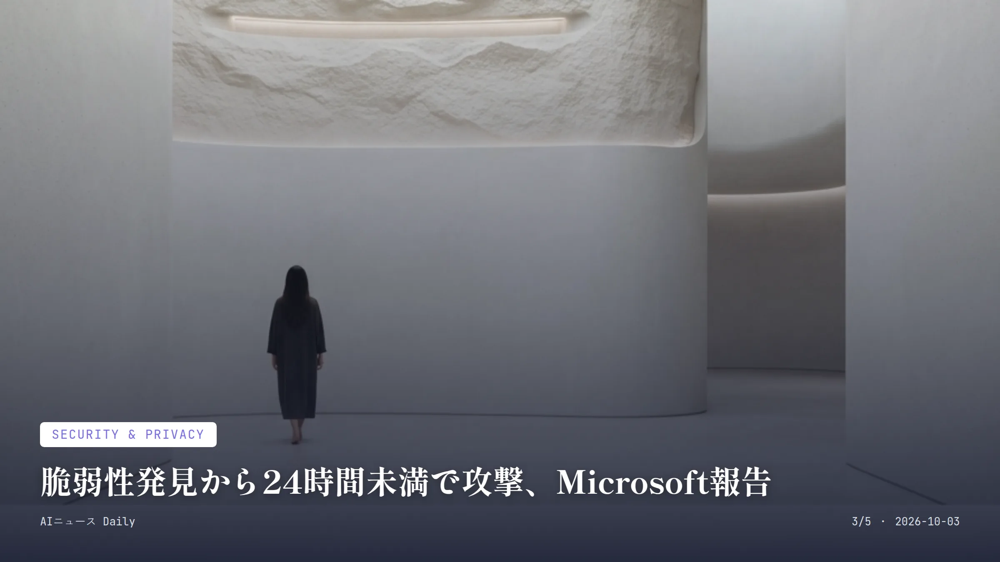
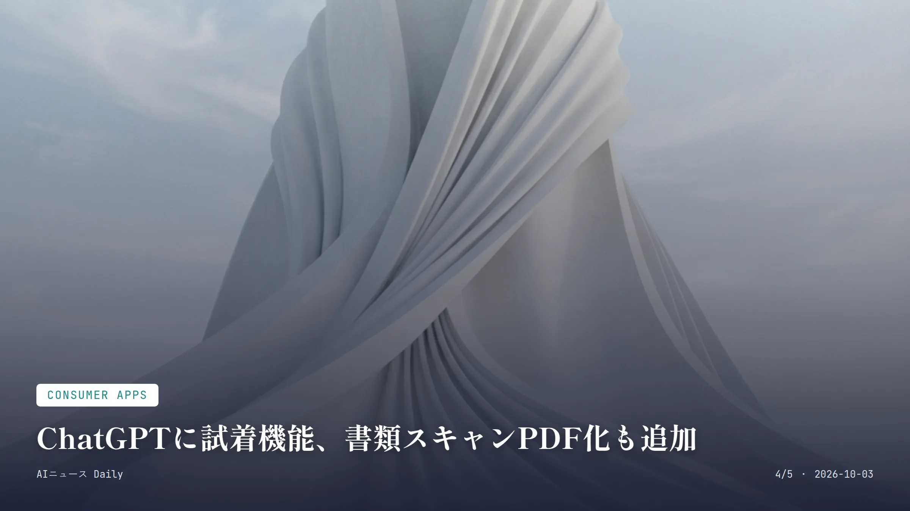

本サイトはアフィリエイトプログラムによる収益を得ている場合があります。
本サイトはGoogle AdSense等の広告配信サービスを利用しています。
目次

Business
約1分で読める
ソフトバンクG、OpenAI出資300億ドル完了
累計646億ドル、持ち分は約13%に到達
646億ドル OpenAIへの累計出資額
約13% ソフトバンクGのOpenAI株式保有比率
ソフトバンクグループは10月1日、米OpenAIの営利部門であるOpenAI Group PBCへ100億ドルの追加出資を実行したと発表した。「ソフトバンク・ビジョン・ファンド2」経由で4月・7月に続く3回目の払い込みとなり、2026年2月に契約した総額300億ドルの追加出資は、これで全額払い込みが終わったことになる。
この払い込みで、ソフトバンクグループのOpenAIへの累計出資額は646億ドル（約10.2兆円）に。OpenAI株式の保有比率も約13％まで積み上がった。
最終回分は9月発行の外貨建て社債で工面したという。気になるのはOpenAIの新規株式公開（IPO）の行方で、サム・アルトマンCEOはAIの安全性対策を優先する名目で、上場時期を2027年以降に先送りする方針を示している。
なぜ重要か ソフトバンクGはOpenAIに10兆円超をつぎ込んだ、最大級の投資家のひとつだ。OpenAIの評価額が動けば、日本の上場企業であるソフトバンクG株を通じて国内の個人投資家にも直接響いてくる。IPO延期の方針が出てきたことで、投資回収がさらに先延ばしになるリスクも、これからの注目点になりそうだ。

AI Safety
約2分で読める
OpenAI、安全研究者3人を解雇したと判明
機密情報の外部共有が理由、WSJが報道
3人 解雇されたセーフティチームの研究者数
2026年10月1日 WSJが報道した日
AI業界全体で安全対策への監視の目が厳しさを増すなか、OpenAIが機密情報を不適切に扱った疑いで、自社のセーフティチームの研究者3人を解雇していたことが分かった。ウォール・ストリート・ジャーナルが報じている。
同紙が関係者の話として伝えたところでは、解雇された研究者らは機密情報へのアクセスや取り扱いを定めた社内規定に違反し、外部のAI安全対策組織と機密情報をやり取りしていたという。OpenAIの広報担当者は、社内調査の結果「当社の規定に違反し、業務に不可欠な信頼関係を損なう」と判断したため解雇に至ったと説明している。
この動きは、カリフォルニア州司法長官のロブ・ボンタ氏が、OpenAIのAIモデルに絡むサイバーセキュリティ事件を巡り調査召喚状を送付したタイミングとも重なる。ボンタ氏の事務所は、同州が先にHugging Face事件を巡る正式調査を始めたことも踏まえ、追加の情報提出を求めている。
なぜ重要か フロンティアAIの安全性を内部でチェックする立場の研究者が、外部への情報共有を理由に解雇されたという一件は、企業の安全対策と社員の内部告発的な行動がぶつかる境界線を浮かび上がらせる。日本ではまだこの種の紛争は表に出ていないが、海外の大手AI企業に頼る国内企業にとっても、提供元の安全体制のガバナンスは見過ごせない論点になりつつある。

Security & Privacy
約1分で読める
脆弱性発見から24時間未満で攻撃、Microsoft報告
フィッシング起点の侵入は前年の3倍以上に
165兆件 Microsoftが1日に分析するセキュリティシグナル数
24時間未満 脆弱性発見から悪用までの中央値
23%（前年7%） フィッシングが侵入の起点となった割合
Microsoftは10月1日、1日に165兆件ものセキュリティシグナルを分析した最新の「2026 Digital Defense Report」を公開した。対象期間は2025年7月から2026年6月まで。攻撃者側がすでにAIを使って攻撃を高速化・大規模化させており、近い将来の優位性は攻撃側に傾きつつある、というのが報告書の結論だ。
脆弱性が実環境で見つかってから、実際に悪用されるまでの期間の中央値は、24時間を大きく下回る水準にまで縮まったという。
さらに、調査対象の侵入事例のうちフィッシングを起点とするものは23％に達し、前年の7％から急増していることも分かった。
なぜ重要か AIがすでに攻撃者側の武器として実戦投入され、防御側より速いペースで脆弱性が悪用され始めている、というのはMicrosoft自身の大規模データに基づく警告だけに重い。日本の組織への影響度は報告書には明記されていないが、フィッシングメールや認証情報の窃取は国や業種を問わず起こりうる脅威で、国内企業もパスワード認証の見直しなど対策を前倒しで迫られる可能性がある。

Consumer Apps
約2分で読める
ChatGPTに試着機能、書類スキャンPDF化も追加
服のバーチャル試着とカメラで書類をPDF化
2026年10月1日 新機能が発表された日
iOS版 書類スキャン機能の提供状況
米OpenAIは10月1日（現地時間）、ChatGPTのリリースノートを更新し、ショッピング関連の新機能とカメラで書類をスキャンする新機能を紹介した。服やアクセサリーをバーチャル試着できる機能はWebおよびモバイル版で使え、商品情報カードに加わった「試着する」ボタンからセルフィー写真を使い、画像生成機能「ChatGPT Images」でその商品を身に着けた自分の姿を作れる。日本語版のChatGPTでも、国内のECサイトの商品でこのボタンが表示されているのが確認されている。
もう一つの新機能は、カメラを使った書類のスキャンだ。手書きのメモや書類を複数ページ続けて撮っていくと、ChatGPTが自動で1つのPDFにまとめ、そのままチャットにアップロードできる状態にしてくれる。カメラの3点メニューから「Scan」を選ぶだけで、iOS版で順次使えるようになってきている。
なぜ重要か 服を買う前の試着も、紙の書類のデジタル化も、いつも使っているChatGPTの中で完結してしまうのが実用的だ。日本語版でも国内ECサイトでの表示が確認されており、来週からでもネット通販や事務作業の一部がこの機能に置き換わる読者が出てきそうだ。
Consumer Apps
約2分で読める
Geminiに視覚支援「Guided Vision」追加
カメラ映像を音声で実況、視覚障がい者向け
2026年10月1日 Guided Vision提供開始日
Android 9以降 対応OSバージョン
1000人超 開発・安全評価に協力したAiraのテスター数
Googleは2026年10月1日、Gemini Liveの新機能「Guided Vision」を発表した。盲目の人や低視力の人、それに直感的な視覚支援を求める人向けに作られた、リアルタイムかつ音声駆動の視覚支援機能だ。Android 9以降を搭載し、Gemini Liveが対応する地域・言語の端末で使える。
細かい文字の読み取り、家電の操作ボタンの識別、落とし物探し、服の色や柄の確認、見知らぬ部屋のレイアウト説明など、カメラを共有するだけで日常のいろいろな場面に対応できるという。カメラの向きがずれているときは、音声で撮り直し方まで案内してくれる。
開発にあたってGoogleは視覚支援サービスのAiraと協力し、1000人を超える「Trusted Tester」の協力を得て安全性の評価も行ったとしている。
なぜ重要か 視覚に障がいのある人にとって、スマホのカメラを向けるだけで周囲の状況を音声で説明してもらえるのは、買い物や外出先での確認作業を人に頼らずにできる場面を増やしてくれるかもしれない。Gemini Liveが対応する地域・言語で使えるとされ、開発には日本などでのテストやフィードバックも反映されたという。日本語での使い勝手は、実際に試して確かめてみたいところだ。
AI Policy
AI Policy
約1分で読める
内閣府など3省庁、AI規制の障壁情報を再募集へ
エージェントAIやロボットも対象に点検
2026年10月2日 情報募集の発表日
3省庁 内閣府・デジタル庁・経済産業省の共同発表
内閣府、デジタル庁、経済産業省は2026年10月2日、AIの社会実装の障害になっている、もしくは効果が不十分だと見られる規制・制度についての情報を募集すると発表した。LLMやエージェントAIに加え、AIロボットなどのフィジカルAIも対象に含める。
府省横断でAI活用を阻む規制・制度を洗い出す取り組みの一環で、エージェント型AIや物理空間で動くフィジカルAIの社会実装を見据え、点検対象を広げたのが今回の特徴だ。
なぜ重要か AIエージェントや物理空間で動くロボットの普及を見据えて、政府が規制・制度面の障壁を府省横断で洗い出そうとしている点が注目される。この点検の結果次第では、数年後に医療・交通・行政サービスなど身近な分野でのAI活用を縛っていたルールが緩和される可能性もあり、動向を追う価値がある。
先頭に戻る